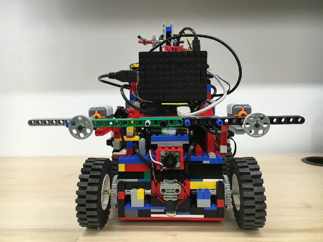

Remote Sensing Image Classification based on Deep Learning Algorithm
2017/11 - 2018/5
Supervisor : Dr. Junli Yang, Beijing University of Posts and Telecommunications
- Extended a multispectral remote sensing dataset from 67 images to 200 images.
- Implemented a fully convolutional network (FCN) with a conditional random field for semantic image segmentation and evaluated it on multispectral remote sensing datasets.
- Proposed a 140x smaller model which achieved approximate accuracies compared with FCN and deployed it on Nvidia Jetson TX2 platform.
Extreme Learning Machine on Text Classification
2017/6 - 2017/9
Supervisor : Dr. Ming Li, Chinese Academy of Sciences
- Implemented a voting extreme learning machine (ELM) model by exploiting diversity in text classification, to accelerate training and maintain good performance compared with the conventional voting ELM on standard text datasets, namely 20news Group, Ruters52 and WebKB;
- Implemented a weighted ELM that used a novel function to distinguish the influence of different categories, and achieved good performance on standard text datasets.
Natural Language Processing Group Internship
2016/12 - 2017/4
Supervisor : Assistant Prof. Dong Wang, Center for Speech and Language Technologies, Tsinghua University
- Wrote a Python script to generate smooth Chinese sentences at a gigabyte level from given potential word lists;
- Applied Latent Dirichlet Allocation (LDA) and Google word2vector toolkits for text classification on standard text datasets, and implemented a text classification model based on word embedding and term entropy;
- Implemented a novel approach combining word vector with an improved TF-IDF algorithm in text classification, which performed at least 5% better than existing TF-IDF methods on standard text datasets;
Voice Similarity Detection
2016/10 - 2016/12
Supervisor : Prof. Songlin Sun, School of Information and Communication Engineering, Beijing University of Posts and Telecommunications
- Collected voice messages from different people and preprocessed the speech signals including pre-emphasis, frame blocking and Hamming windowing using Matlab;
- Extracted fundamental frequency and mel-scale frequency cepstral coefficient (MFCC) from speech signals and scored signal pairs according to similarity.
Interactive Class Teaching System with Kinect
2016/4 - 2017/3
Supervisor : Prof. Zhitao Dai, School of Computer Science, Beijing University of Posts and Telecommunications
- Established a human gesture recognition system to identify a few human gestures, such as making a fist or raising the right hand, by recognizing relative motions of joints using Kinect for Windows SDK (C#);
- Applied the system to control 3D graphics according to different gestures in Unity3D and designed a user interface;
- Graded as national-level undergraduate innovation project (10% of 292 projects).
To be continued...
